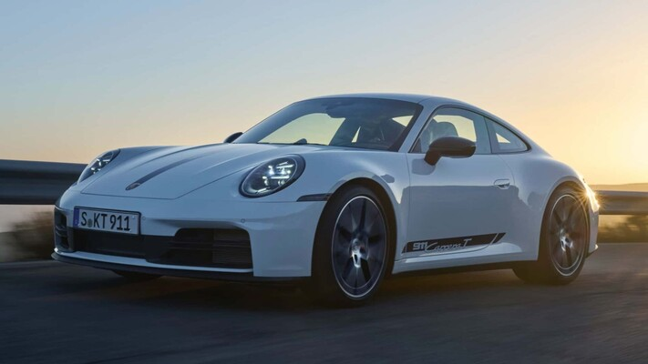
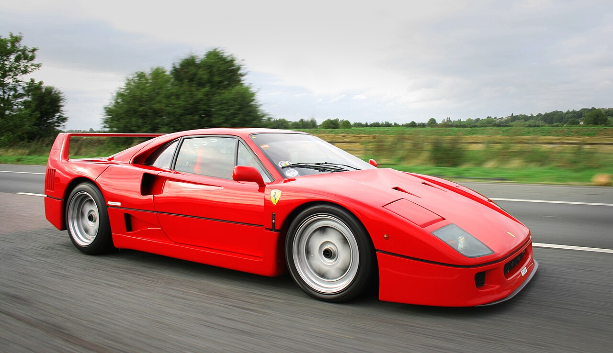
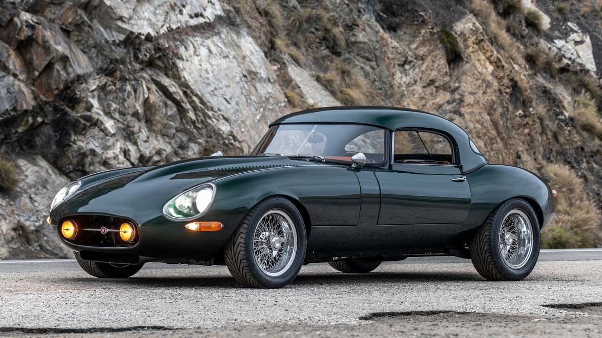
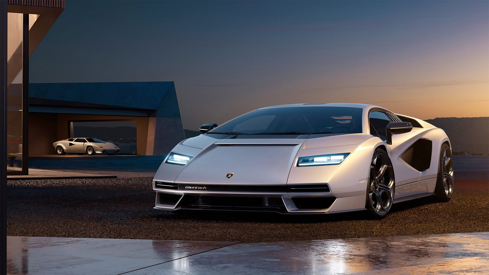

Porsche 911 Carrera
Identificador (id): c401
Año: 2019
Potencia: 385 CV
Aceleración: 4.2 s
Velocidad máxima: 293 km/h
Tipo: Deportivo
Precio: 130.000 €
Creador: Ferdinand Alexander

Coches clásicos y deportivos
Aquí están todos los datos que guardo en el archivo datos.xml, uno por cada coche del proyecto.
El catálogo pertenece al usuario Francisco-390 y cada coche tiene un identificador único.
Identificador (id): c401
Año: 2019
Potencia: 385 CV
Aceleración: 4.2 s
Velocidad máxima: 293 km/h
Tipo: Deportivo
Precio: 130.000 €
Creador: Ferdinand Alexander

Identificador (id): c402
Año: 1987
Potencia: 478 CV
Aceleración: 4.7 s
Velocidad máxima: 324 km/h
Tipo: Clásico
Precio: 2.600.000 €
Creador: Leonardo Fioravanti

Identificador (id): c403
Año: 1961
Potencia: 265 CV
Aceleración: 6.9 s
Velocidad máxima: 241 km/h
Tipo: Deportivo
Precio: 170.000 €
Creador: Malcolm Sayer

Identificador (id): c404
Año: 1974
Potencia: 375 CV
Aceleración: 5.6 s
Velocidad máxima: 300 km/h
Tipo: Clásico
Precio: 1.500.000 €
Creador: Marcello Gandini

Coche Año Potencia Aceleración Vel. máx. Porsche 911 Carrera 2019 385 CV 4.2 s 293 km/h Ferrari F40 1987 478 CV 4.7 s 324 km/h Jaguar E-Type 1961 265 CV 6.9 s 241 km/h Lamborghini Countach 1974 375 CV 5.6 s 300 km/h